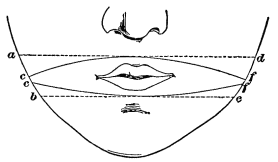

Chapter 21: The Perception of Space¶
21.1 The Perception of Space¶
As adult thinkers we have a definite and apparently instantaneous knowledge of the sizes, shapes, and distances of the things amongst which we live and move; and we have moreover a practically definite notion of the whole great infinite continuum of real space in which the world swings and in which all these things are located. Nevertheless it seems obvious that the baby's world is vague and confused in all these respects. How does our definite knowledge of space grow up? This is one of the quarrelsome problems in psychology. This chapter must be so brief that there will be no room for the polemic and historic aspects of the subject, and I will state simply and dogmatically the conclusions which seem most plausible to me.
The quality of voluminousness exists in all sensations, just as intensity does. We call the reverberations of a thunder-storm more voluminous than the squeaking of a slate-pencil; the entrance into a warm bath gives our skin a more massive feeling than the prick of a pin; a little neuralgic pain, fine as a cobweb, in the face, seems less extensive than the heavy soreness of a boil or the vast discomfort of a colic or a lumbago; and a solitary star looks smaller than the noonday sky. Muscular sensations and semicircular-canal sensations have volume. Smells and tastes are not without it; and sensations from our inward organs have it in a marked degree.
Repletion and emptiness, suffocation, palpitation, headache, are examples of this, and certainly not less spatial is the consciousness we have of our general bodily condition in nausea, fever, heavy drowsiness, and fatigue. Our entire cubic content seems then sensibly manifest to us as such, and feels much larger than any local pulsation, pressure, or discomfort. Skin and retina are, however, the organs in which the space-element plays the most active part. Not only does the maximal vastness yielded by the retina surpass that yielded by any other organ, but the intricacy with which our attention can subdivide this vastness and perceive it to be composed of lesser portions simultaneously coexisting alongside of each other is without a parallel elsewhere. The ear gives a greater vastness than the skin, but is considerably less able to subdivide it. The vastness, moreover, is as great in one direction as in another. Its dimensions are so vague that in it there is no question as yet of surface as opposed to depth; 'volume' being the best short name for the sensation in question.
Sensations of different orders are roughly comparable with each other as to their volumes. Persons born blind are said to be surprised at the largeness with which objects appear to them when their sight is restored. Franz says of his patient cured of cataract: "He saw everything much larger than he had supposed from the idea obtained by his sense of touch. Moving, and especially living, objects appeared very large." Loud sounds have a certain enormousness of feeling. 'Glowing' bodies as Hering says, give us a perception "which seems roomy (raumhaft) in comparison with that of strictly surface-color. A glowing iron looks luminous through and through, and so does a flame." The interior of one's mouth-cavity feels larger when explored by the tongue than when looked at. The crater of a newly-extracted tooth, and the movements of a loose tooth in its socket, feel quite monstrous. A midge buzzing against the drum of the ear will often seem as big as a butterfly. The pressure of the air in the tympanic cavity upon the membrane gives an astonishingly large sensation.
The voluminousness of the feeling seems to bear very little relation to the size of the organ that yields it. The ear and eye are comparatively minute organs, yet they give us feelings of great volume. The same lack of exact proportion between size of feeling and size of organ affected obtains within the limits of particular sensory organs. An object appears smaller on the lateral portions of the retina than it does on the fovea, as may be easily verified by holding the two forefingers parallel and a couple of inches apart, and transferring the gaze of one eye from one to the other. Then the finger not directly looked at will appear to shrink. On the skin, if two points kept equidistant (blunted compass-or scissors-points, for example) be drawn along so as really to describe a pair of parallel lines, the lines will appear farther apart in some spots than in others. If, for example, we draw them across the face, the person experimented upon will feel as if they began to diverge near the mouth and to include it in a well-marked ellipse.

Now my first thesis is that this extensity, discernible in each and every sensation, though more developed in some than in others, IS THE ORIGINAL SENSATION OF SPACE, out of which all the exact knowledge about space that we afterwards come to have is woven by processes of discrimination, association, and selection.
The Construction of Real Space.—To the babe who first opens his senses upon the world, though the experience is one of vastness or extensity, it is of an extensity within which no definite divisions, directions, sizes, or distances are yet marked out. Potentially, the room in which the child is born is subdivisible into a multitude of parts, fixed or movable, which at any given moment of time have definite relations to each other and to his person. Potentially, too, this room taken as a whole can be prolonged in various directions by the addition to it of those farther-lying spaces which constitute the outer world. But actually the further spaces are unfelt, and the subdivisions are undiscriminated, by the babe; the chief part of whose education during his first year of life consists in his becoming acquainted with them and recognizing and identifying them in detail. This process may be called that of the construction of real space, as a newly apprehended object, out of the original chaotic experiences of vastness. It consists of several subordinate processes:
First, the total object of vision or of feeling at any time must have smaller objects definitely discriminated within it;
Secondly, objects seen or tasted must be identified with objects felt, heard, etc., and vice versa, so that the same 'thing' may come to be recognized, although apprehended in such widely differing ways;
Third, the total extent felt at any time must be conceived as definitely located in the midst of the surrounding extents of which the world consists;
Fourth, these objects must appear arranged in definite order in the so-called three dimensions; and
Fifth, their relative sizes must be perceived—in other words, they must be measured.
Let us take these processes in regular order.
1) Subdivision or Discrimination.—Concerning this there is not much to be added to what was set forth in Chapter XIV. Moving parts, sharp parts, brightly colored parts of the total field of perception 'catch the attention' and are then discerned as special objects surrounded by the remainder of the field of view or touch. That when such objects are discerned apart they should appear as thus surrounded, must be set down as an ultimate fact of our sensibility of which no farther account can be given. Later, as one partial object of this sort after another has become familiar and identifiable, the attention can be caught by more than one at once. We then see or feel a number of distinct objects alongside of each other in the general extended field. The 'alongsideness' is in the first instance vague—it may not carry with it the sense of definite directions or distances—and it too must be regarded as an ultimate fact of our sensibility.
2) Coalescence of Different Sensations into the Same 'Thing.'—When two senses are impressed simultaneously we tend to identify their objects as one thing. When a conductor is brought near the skin, the snap heard, the spark seen, and the sting felt, are all located together and believed to be different aspects of one entity, the 'electric discharge.' The space of the seen object fuses with the space of the heard object and with that of the felt object by an ultimate law of our consciousness, which is that we simplify, unify, and identify as much as we possibly can. Whatever sensible data can be attended to together we locate together. Their several extents seem one extent. The place at which each clears is held to be the same with the place at which the others appear. This is the first and great 'act' by which our world gets spatially arranged.
In this coalescence in a 'thing,' one of the coalescing sensations is held to be the thing, the other sensations are taken for its more or less accidental properties, or modes of appearance. The sensation chosen to be essentially the thing is the most constant and practically important of the lot; most often it is hardness or weight. But the hardness or weight is never without tactile bulk; and as we can always see something in our hand when we feel something there, we equate the bulk felt with the bulk seen, and thenceforward this common bulk is also apt to figure as of the essence of the 'thing.' Frequently a shape so figures, sometimes a temperature, a taste, etc.; but for the most part temperature, smell, sound, color, or whatever other phenomena may vividly impress us simultaneously with the bulk felt or seen, figure among the accidents. Smell and sound impress us, it is true, when we neither see nor touch the thing; but they are strongest when we see or touch, so we locate the source of these properties within the touched or seen space, whilst the properties themselves we regard as overflowing in a weakened form into the spaces filled by other things. In all this, it will be observed, the sense-data whose spaces coalesce into one are yielded by different sense-organs. Such data have no tendency to displace each other from consciousness, but can be attended to together all at once. Often indeed they vary concomitantly and reach a maximum together. We may be sure, therefore, that the general rule of our mind is to locate IN each other all sensations which are associated in simultaneous experience and do not interfere with each other's perception.
3) The Sense of the Surrounding World.—Different impressions on the same sense-organ do interfere with each other's perception and cannot well be attended to at once. Hence we do not locate them in each other's spaces, but arrange them in a serial order of exteriority, each alongside of the rest, in a space larger than that which any one sensation brings. We can usually recover anything lost from our sight by moving our eyes back in its direction; and it is through these constant changes that every field of seen things comes at last to be thought of as always having a fringe of other things possible to be seen spreading in all directions round about it. Meanwhile the movements concomitantly with which the various fields alternate are also felt and remembered; and gradually (through association) this and that movement come in our thought to suggest this or that extent of fresh objects introduced. Gradually, too, since the objects vary indefinitely in kind, we abstract from their several natures and think separately of their mere extents, of which extents the various movements remain as the only constant introducers and associates. More and more, therefore, do we think of movement and seen extent as mutually involving each other, until at last we may get to regard them as synonymous; and, empty space then meaning for us mere room for movement, we may, if we are psychologists, readily but erroneously assign to the 'muscular sense' the chief rôle in perceiving extensiveness at all.
4) The Serial Order of Locations.—The muscular sense has much to do with defining the order of position of things seen, felt, or heard. We look at a point; another point upon the retina's margin catches our attention, and in an instant we turn the fovea upon it, letting its image successively fall upon all the points of the intervening retinal line. The line thus traced so rapidly by the second point is itself a visual object, with the first and second point at its respective ends. It separates the points, which become located by its length with reference to each other. If a third point catch the attention, more peripheral still than the second point, then a still greater movement of the eyeball and a continuation of the line will result, the second point now appearing between the first and third. Every moment of our life, peripherally-lying objects are drawing lines like this between themselves and other objects which they displace from our attention as we bring them to the centre of our field of view. Each peripheral retinal point comes in this way to suggest a line at the end of which it lies, a line which a possible movement will trace; and even the motionless field of vision ends at last by signifying a system of positions brought out by possible movements between its centre and all peripheral parts.
It is the same with our skin and joints. By moving our hand over objects we trace lines of direction, and new impressions arise at their ends. The 'lines' are sometimes on the articular surfaces, sometimes on the skin as well; in either case they give a definite order of arrangement to the successive objects between which they intervene. Similarly with sounds and smells. With our heads in a certain position, a certain sound or a certain smell is most distinct. Turning our head makes this experience fainter and brings another sound, or another smell, to its maximum. The two sounds or smells are thus separated by the movement located at its ends, the movement itself being realized as a sweep through space whose value is given partly by the semicircular-canal feeling, partly by the articular cartilages of the neck, and partly by the impressions produced upon the eye.
By such general principles of action as these everything looked at, felt, smelt, or heard comes to be located in a more or less definite position relatively to other collateral things either actually presented or only imagined as possibly there. I say 'collateral' things, for I prefer not to complicate the account just yet with any special consideration of the 'third dimension,' distance, or depth, as it has been called.
3) The Measurement of Things in Terms of Each Other.—Here the first thing that seems evident is that we have no immediate power of comparing together with any accuracy the extents revealed by different sensations. Our mouth-cavity feels indeed to the tongue larger than it feels to the finger or eye, our lips feel larger than a surface equal to them on our thigh. So much comparison is immediate; but it is vague; and for anything exact we must resort to other help.
The great agent in comparing the extent felt by one sensory surface with that felt by another is superposition—superposition of one surface upon another, and superposition of one outer thing upon many surfaces.
Two surfaces of skin superposed on each other are felt simultaneously, and by the law laid down on p. 339 are judged to occupy an identical place. Similarly of our hand, when seen and felt at the same time by its resident sensibility.
In these identifications and reductions of the many to the one it must be noticed that when the resident sensations of largeness of two opposed surfaces conflict, one of the sensations is chosen as the true standard and the other treated as illusory. Thus an empty tooth-socket is believed to be really smaller than the finger-tip which it will not admit, although it may feel larger; and in general it may be said that the hand, as the almost exclusive organ of palpation, gives its own magnitude to the other parts, instead of having its size determined by them.
But even though exploration of one surface by another were impossible, we could always measure our various surfaces against each other by applying the same extended object first to one and then to another. We might of course at first suppose that the object itself waxed and waned as it glided from one place to another (cf. above, Fig. 65); but the principle of simplifying as much as possible our world would soon drive us out of that assumption into the easier one that objects as a rule keep their sizes, and that most of our sensations are affected by errors for which a constant allowance must be made.
In the retina there is no reason to suppose that the bignesses of two impressions (lines or blotches) falling on different regions are at first felt to stand in any exact mutual ratio. But if the impressions come from the same object, then we might judge their sizes to be just the same. This, however, only when the relation of the object to the eye is believed to be on the whole unchanged. When the object, by moving, changes its relations to the eye, the sensation excited by its image even on the same retinal region becomes so fluctuating that we end by ascribing no absolute import whatever to the retinal space-feeling which at any moment we may receive. So complete does this overlooking of retinal magnitude become that it is next to impossible to compare the visual magnitudes of objects at different distances without making the experiment of superposition. We cannot say beforehand how much of a distant house or tree our finger will cover. The various answers to the familiar question, How large is the moon?—answers which vary from a cartwheel to a wafer—illustrate this most strikingly. The hardest part of the training of a young draughtsman is his learning to feel directly the retinal (i.e. primitively sensible) magnitudes which the different objects in the field of view subtend. To do this he must recover what Ruskin calls the 'innocence of the eye'—that is, a sort of childish perception of stains of color merely as such, without consciousness of what they mean.
With the rest of us this innocence is lost. Out of all the visual magnitudes of each known object we have selected one as the 'real' one to think of, and degraded all the others to serve as its signs. This real magnitude is determined by æsthetic and practical interests. It is that which we get when the object is at the distance most propitious for exact visual discrimination of its details. This is the distance at which we hold anything we are examining. Farther than this we see it too small, nearer too large. And the larger and the smaller feeling vanish in the act of suggesting this one, their more important meaning. As I look along the dining-table I overlook the fact that the farther plates and glasses feel so much smaller than my own, for I know that they are all equal in size; and the feeling of them, which is a present sensation, is eclipsed in the glare of the knowledge, which is a merely imagined one.
It is the same with shape as with size. Almost all the visible shapes of things are what we call perspective 'distortions.' Square table-tops constantly present two acute and two obtuse angles; circles drawn on our wall-papers, our carpets, or on sheets of paper, usually show like ellipses; parallels approach as they recede; human bodies are foreshortened; and the transitions from one to another of these altering forms are infinite and continual. Out of the flux, however, one phase always stands prominent. It is the form the object has when we see it easiest and best: and that is when our eyes and the object both are in what may be called the normal position. In this position our head is upright and our optic axes either parallel or symmetrically convergent; the plane of the object is perpendicular to the visual plane; and if the object is one containing many lines, it is turned so as to make them, as far as possible, either parallel or perpendicular to the visual plane. In this situation it is that we compare all shapes with each other; here every exact measurement and every decision is made.
Most sensations are signs to us of other sensations whose space-value is held to be more real. The thing as it would appear to the eye if it were in the normal position is what we think of whenever we get one of the other optical views. Only as represented in the normal position do we believe we see the object as it is; elsewhere, only as it seems. Experience and custom soon teach us, however, that the seeming appearance passes into the real one by continuous gradations. They teach us, moreover, that seeming and being may be strangely interchanged. Now a real circle may slide into a seeming ellipse; now an ellipse may, by sliding in the same direction, become a seeming circle; now a rectangular cross grows slant-legged; now a slant-legged one grows rectangular.
Almost any form in oblique vision may be thus a derivative of almost any other in 'primary' vision; and we must learn, when we get one of the former appearances, to translate it into the appropriate one of the latter class; we must learn of what optical 'reality' it is one of the optical signs. Having learned this, we do but obey that law of economy or simplification which dominates our whole psychic life, when we think exclusively of the 'reality' and ignore as much as our consciousness will let us the 'sign' by which we came to apprehend it. The signs of each probable real thing being multiple and the thing itself one and fixed, we gain the same mental relief by abandoning the former for the latter that we do when we abandon mental images, with all their fluctuating characters, for the definite and unchangeable names which they suggest. The selection of the several 'normal' appearances from out of the jungle of our optical experiences, to serve as the real sights of which we shall think, has thus some analogy to the habit of thinking in words, in that by both we substitute terms few and fixed for terms manifold and vague.
If an optical sensation can thus be a mere sign to recall another sensation of the same sense, judged more real, a fortiori can sensations of one sense be signs of realities which are objects of another. Smells and tastes make us believe the visible cologne-bottle, strawberry, or cheese to be there. Sights suggest objects of touch, touches suggest objects of sight, etc. In all this substitution and suggestive recall the only law that holds good is that in general the most interesting of the sensations which the 'thing' can give us is held to represent its real nature most truly. It is a case of the selective activity mentioned on p. 170 ff.
The Third Dimension or Distance.—This service of sensations as mere signs, to be ignored when they have evoked the other sensations which are their significates, was noticed first by Berkeley in his new theory of vision. He dwelt particularly on the fact that the signs were not natural signs, but properties of the object merely associated by experience with the more real aspects of it which they recall. The tangible 'feel' of a thing, and the 'look' of it to the eye, have absolutely no point in common, said Berkeley; and if I think of the look of it when I get the feel, or think of the feel when I get the look, that is merely due to the fact that I have on so many previous occasions had the two sensations at once. When we open our eyes, for example, we think we see how far off the object is. But this feeling of distance, according to Berkeley, cannot possibly be a retinal sensation, for a point in outer space can only impress our retina by the single dot which it projects 'in the fund of the eye,' and this dot is the same for all distances. Distance from the eye, Berkeley considered not to be an optical object at all, but an object of touch, of which we have optical signs of various sorts, such as the image's apparent magnitude, its 'faintness' or 'confusion,' and the 'strain' of accommodation and convergence. By distance being an object of 'touch,' Berkeley meant that our notion of it consists in ideas of the amount of muscular movement of arm or legs which would be required to place our hand upon the object. Most authors have agreed with Berkeley that creatures unable to move either their eyes or limbs would have no notion whatever of distance or the third dimension.
This opinion seems to me unjustifiable. I cannot get over the fact that all our sensations are of volume, and that the primitive field of view (however imperfectly distance may be discriminated or measured in it) cannot be of something flat, as these authors unanimously maintain. Nor can I get over the fact that distance, when I see it, is a genuinely optical feeling, even though I be at a loss to assign any one physiological process in the organ of vision to the varying degrees of which the variations of the feeling uniformly correspond. It is awakened by all the optical signs which Berkeley mentioned, and by more besides, such as Wheatstone's binocular disparity, and by the parallax which follows on slightly moving the head. When awakened, however, it seems optical, and not heterogeneous with the other two dimensions of the visual field.
The mutual equivalencies of the distance-dimension with the up-and-down and right-to-left dimensions of the field of view can easily be settled without resorting to experiences of touch. A being reduced to a single eyeball would perceive the same tridimensional world which we do, if he had our intellectual powers. For the same moving things, by alternately covering different parts of his retina, would determine the mutual equivalencies of the first two dimensions of the field of view; and by exciting the physiological cause of his perception of depth in various degrees, they would establish a scale of equivalency between the first two and the third.
First of all, one of the sensations given by the object would be chosen to represent its 'real' size and shape, in accordance with the principles so lately laid down. One sensation would measure the 'thing' present, and the 'thing' would measure the other sensations—the peripheral parts of the retina would be equated with the central by receiving the image of the same object. This needs no elucidation in case the object does not change its distance or its front. But suppose, to take a more complicated case, that the object is a stick, seen first in its whole length, and then rotated round one of its ends; let this fixed end be the one near the eye. In this movement the stick's image will grow progressively shorter; its farther end will appear less and less separated laterally from its fixed near end; soon it will be screened by the latter, and then reappear on the opposite side, the image there finally resuming its original length. Suppose this movement to become a familiar experience; the mind will presumably react upon it after its usual fashion (which is that of unifying all data which it is in any way possible to unify), and consider it the movement of a constant object rather than the transformation of a fluctuating one. Now, the sensation of depth which it receives during the experience is awakened more by the far than by the near end of the object. But how much depth? What shall measure its amount? Why, at the moment the far end is about to be eclipsed, the difference of its distance from the near end's distance must be judged equal to the stick's whole length; but that length has already been seen and measured by a certain visual sensation of breadth. So we find that given amounts of the visual depth-feeling become signs of given amounts of the visual breadth-feeling, depth becoming equated with breadth. The measurement of distance is, as Berkeley truly said, a result of suggestion and experience. But visual experience alone is adequate to produce it, and this he erroneously denied.
The Part played by the Intellect in Space-perception.—But although Berkeley was wrong in his assertion that out of optical experience alone no perception of distance can be evolved, he gave a great impetus to psychology by showing how originally incoherent and incommensurable in respect of their extensiveness our different sensations are, and how our actually so rapid space-perceptions are almost altogether acquired by education. Touch-space is one world; sight-space is another world. The two worlds have no essential or intrinsic congruence, and only through the 'association of ideas' do we know what a seen object signifies in terms of touch. Persons with congenital cataracts relieved by surgical aid, whose world until the operation has been a world of tangibles exclusively, are ludicrously unable at first to name any of the objects which newly fall upon their eye. "It might very well be a horse," said the latest patient of this sort of whom we have an account, when a 10-litre bottle was held up a foot from his face.1 Neither do such patients have any accurate notion in motor terms of the relative distances of things from their eyes. All such confusions very quickly disappear with practice, and the novel optical sensations translate themselves into the familiar language of touch. The facts do not prove in the least that the optical sensations are not spatial, but only that it needs a subtler sense for analogy than most people have, to discern the same spatial aspects and relations in them which previously-known tactile and motor experiences have yielded.
Conclusion.—To sum up, the whole history of space-perception is explicable if we admit on the one hand sensations with certain amounts of extensity native to them, and on the other the ordinary powers of discrimination, selection, and association in the mind's dealings with them. The fluctuating import of many of our optical sensations, the same sensation being so ambiguous as regards size, shape, locality, and the like, has led many to believe that such attributes as these could not possibly be the result of sensation at all, but must come from some higher power of intuition, synthesis, or whatever it might be called. But the fact that a present sensation can at any time become the sign of a represented one judged to be more real, sufficiently accounts for all the phenomena without the need of supposing that the quality of extensity is created out of non-extensive experiences by a super-sensational faculty of the mind.
-
Cf. Raehlmann in Zeitschrift für Psychol. und Physiol. der Sinnesorgane, II. 79. ↩